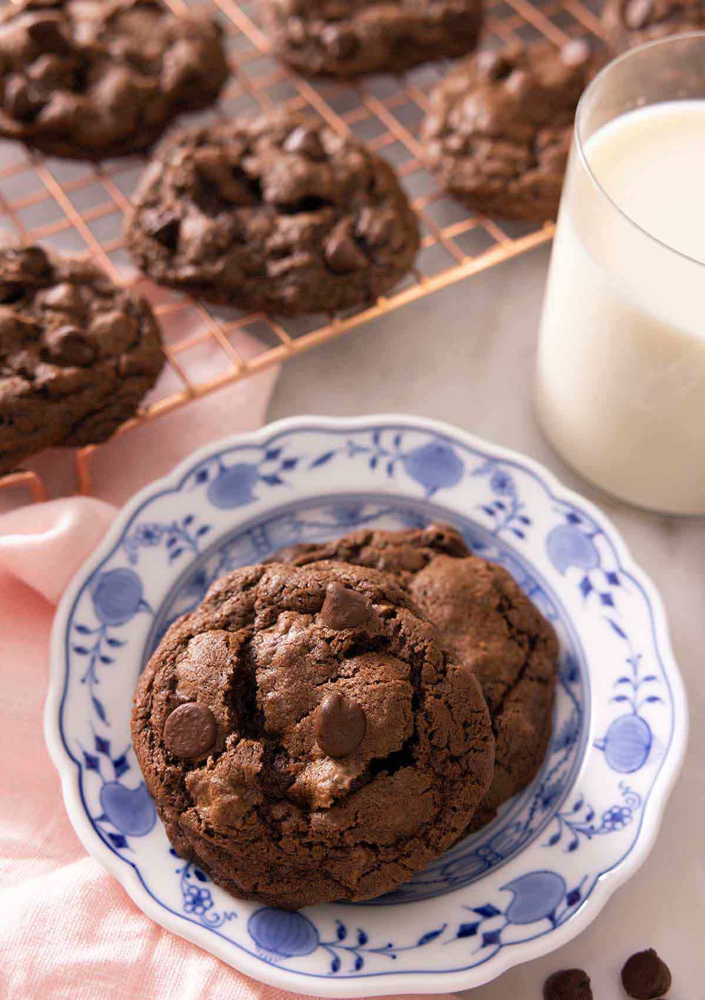

Double Chocolate Chip Cookies

Ingredients
- 1 cup all-purpose flour (120g)
- ⅓ cup natural unsweetened cocoa powder (33g)
- ½ teaspoon baking soda
- ½ teaspoon salt
- 1 teaspoons of espresso powder
- ½ cup unsalted butter softened, (113g)
- ½ cup light brown sugar (110g)
- ⅓ cup granulated sugar (66g)
- 1 large egg
- 2 teaspoons vanilla extract
- 1 cup semisweet chocolate chips or dark chocolate chunks or chopped bars (180g)
Steps
- Preheat oven to 375F. Line two baking sheets with parchment paper.
- In a bowl, sift together flour, cocoa powder, baking soda, and salt.
- In a large mixing bowl or the bowl of a stand mixer fitted with the paddle attachment, beat butter and sugars on medium speed until very light and fluffy, about 3 minutes.
- Add egg and vanilla and beat until well combined, scraping down the sides of the bowl as needed.
- With the mixer on low speed, gradually add the flour mixture, mixing just until combined. Stir in the chocolate chips.
- Chill for 3 hours in fridge or 1 hour in freezer. Let thaw for 5-10 minutes. Otherwise dough will extremely sticky and cookies will spread.
- Scoop 1½ tablespoon-sized balls of dough on the cookie sheet, place about 2 inches apart.
- Bake for 10 minutes or until cookie edges are firm and the center appears dry. Let cool on the sheets for 5 minutes. Transfer to wire racks to continue cooling. Store baked cookies in an airtight container for up to 5 days